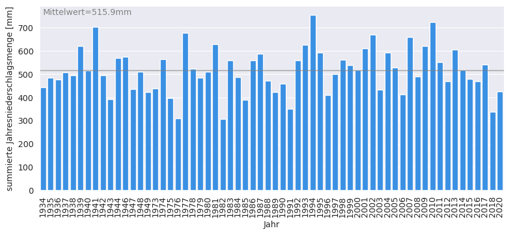
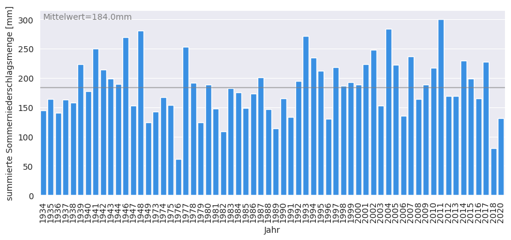
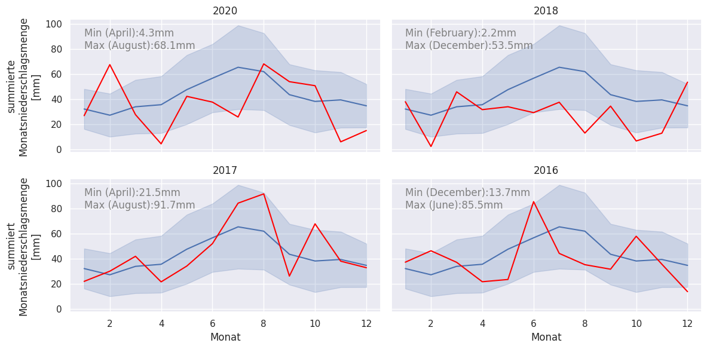

Niederschlag¶
RSK;tgl. Niederschlagshoehe,mm
Daten einlesen und verarbeiten¶
import pandas as pd
# historische Daten einlesen
data_hist = pd.read_csv("produkt_klima_tag_19340101_20181231_02932.txt", sep=";")
data_hist = data_hist.loc[:,("MESS_DATUM"," RSK")]
# aktuelle Daten einlesen
data_aktuell = pd.read_csv("produkt_klima_tag_20190719_20210118_02932.txt", sep=";")
data_aktuell = data_aktuell.loc[:,("MESS_DATUM"," RSK")]
# Daten zusammenfuehren
df = pd.concat([data_hist, data_aktuell]).reset_index(drop=True)
# Spalte umbennnen
df.rename(columns={" RSK":"tgl. Niederschlagshoehe [mm]"}, inplace=True)
# Datumsformat einführen
df['Datum'] = pd.to_datetime(df['MESS_DATUM'],format='%Y%m%d')
# Tag/Monat/Jahr Spalte hinzufuegen
df["Jahr"] = pd.DatetimeIndex(df['Datum']).year
df["Monat"] = pd.DatetimeIndex(df['Datum']).month
df["Tag"] = pd.DatetimeIndex(df['Datum']).day
# Spalte MESS_DATUM entfernen
df = df.drop(["MESS_DATUM"],axis=1)
df
---------------------------------------------------------------------------
ModuleNotFoundError Traceback (most recent call last)
<ipython-input-1-b7c39c02243d> in <module>
----> 1 import pandas as pd
2
3 # historische Daten einlesen
4 data_hist = pd.read_csv("produkt_klima_tag_19340101_20181231_02932.txt", sep=";")
5 data_hist = data_hist.loc[:,("MESS_DATUM"," RSK")]
ModuleNotFoundError: No module named 'pandas'
auf ungewöhnliche Werte prüfen¶
df["tgl. Niederschlagshoehe [mm]"].describe()
count 23354.000000
mean 1.195624
std 15.084676
min -999.000000
25% 0.000000
50% 0.000000
75% 1.100000
max 77.100000
Name: tgl. Niederschlagshoehe [mm], dtype: float64
# Werte "-999" rausfiltern
df = df.loc[df["tgl. Niederschlagshoehe [mm]"] > -999]
# Jahre entfernen die weniger als 360 Tage enthalten
df = df.groupby(by=["Jahr"]).filter(lambda x: len(x) > 360)
df
| tgl. Niederschlagshoehe [mm] | Datum | Jahr | Monat | Tag | |
|---|---|---|---|---|---|
| 0 | 0.3 | 1934-01-01 | 1934 | 1 | 1 |
| 1 | 0.0 | 1934-01-02 | 1934 | 1 | 2 |
| 2 | 0.0 | 1934-01-03 | 1934 | 1 | 3 |
| 3 | 0.0 | 1934-01-04 | 1934 | 1 | 4 |
| 4 | 7.9 | 1934-01-05 | 1934 | 1 | 5 |
| ... | ... | ... | ... | ... | ... |
| 23331 | 0.0 | 2020-12-27 | 2020 | 12 | 27 |
| 23332 | 0.0 | 2020-12-28 | 2020 | 12 | 28 |
| 23333 | 0.0 | 2020-12-29 | 2020 | 12 | 29 |
| 23334 | 0.2 | 2020-12-30 | 2020 | 12 | 30 |
| 23335 | 0.3 | 2020-12-31 | 2020 | 12 | 31 |
22642 rows × 5 columns
import seaborn as sns
sns.set(rc={'figure.figsize':(10,15)})
sns.countplot(data=df, y="Jahr")
<AxesSubplot:xlabel='count', ylabel='Jahr'>
# Jahreswerte bestimmen
Niederschlag_Jahreswerte = df.groupby("Jahr").agg(
sum=pd.NamedAgg(column='tgl. Niederschlagshoehe [mm]', aggfunc='sum')
).reset_index()
Niederschlag_Jahreswerte.columns=["Jahr","summierte Jahresniederschlagsmenge [mm]"]
Niederschlag_Jahreswerte
| Jahr | summierte Jahresniederschlagsmenge [mm] | |
|---|---|---|
| 0 | 1934 | 443.5 |
| 1 | 1935 | 486.0 |
| 2 | 1936 | 477.4 |
| 3 | 1937 | 507.8 |
| 4 | 1938 | 494.1 |
| ... | ... | ... |
| 57 | 2015 | 478.6 |
| 58 | 2016 | 469.3 |
| 59 | 2017 | 542.1 |
| 60 | 2018 | 338.3 |
| 61 | 2020 | 425.2 |
62 rows × 2 columns
# Monatswerte bestimmen
Niederschlag_Monatswerte = df.groupby(["Jahr","Monat"]).agg(
sum=pd.NamedAgg(column='tgl. Niederschlagshoehe [mm]', aggfunc='sum')
).reset_index()
Niederschlag_Monatswerte.columns=["Jahr","Monat","summierte Monatsniederschlagsmenge [mm]"]
Niederschlag_Monatswerte
| Jahr | Monat | summierte Monatsniederschlagsmenge [mm] | |
|---|---|---|---|
| 0 | 1934 | 1 | 22.5 |
| 1 | 1934 | 2 | 37.6 |
| 2 | 1934 | 3 | 11.7 |
| 3 | 1934 | 4 | 21.4 |
| 4 | 1934 | 5 | 48.5 |
| ... | ... | ... | ... |
| 739 | 2020 | 8 | 68.1 |
| 740 | 2020 | 9 | 53.9 |
| 741 | 2020 | 10 | 50.7 |
| 742 | 2020 | 11 | 5.9 |
| 743 | 2020 | 12 | 14.9 |
744 rows × 3 columns
Plot 1 : Jahreswerte¶
import seaborn as sns
import matplotlib.pyplot as plt
sns.reset_defaults()
sns.set_style("darkgrid")
plt.figure(figsize=(10,4))
ax = sns.barplot(data=Niederschlag_Jahreswerte, x="Jahr", y="summierte Jahresniederschlagsmenge [mm]", color="dodgerblue")
ax.axhline(Niederschlag_Jahreswerte["summierte Jahresniederschlagsmenge [mm]"].mean(), alpha=0.5, c="gray")
ax.text(0,Niederschlag_Jahreswerte["summierte Jahresniederschlagsmenge [mm]"].max(),"Mittelwert="+str(Niederschlag_Jahreswerte["summierte Jahresniederschlagsmenge [mm]"].mean().round(1))+"mm",c="gray")
for item in ax.get_xticklabels():
item.set_rotation(90)

Plot 1b : Sommermonate¶
# Monatswerte bestimmen
df_Sommer = df.loc[(df["Monat"] == 6) | (df["Monat"] == 7) | (df["Monat"] == 8)]
Niederschlag_Sommermonate = df_Sommer.groupby(["Jahr"]).agg(
sum=pd.NamedAgg(column='tgl. Niederschlagshoehe [mm]', aggfunc='sum')
).reset_index()
Niederschlag_Sommermonate.columns=["Jahr","summierte Sommerniederschlagsmenge [mm]"]
Niederschlag_Sommermonate
| Jahr | summierte Sommerniederschlagsmenge [mm] | |
|---|---|---|
| 0 | 1934 | 144.2 |
| 1 | 1935 | 163.6 |
| 2 | 1936 | 140.8 |
| 3 | 1937 | 163.0 |
| 4 | 1938 | 158.0 |
| ... | ... | ... |
| 57 | 2015 | 199.2 |
| 58 | 2016 | 164.9 |
| 59 | 2017 | 228.0 |
| 60 | 2018 | 79.6 |
| 61 | 2020 | 131.4 |
62 rows × 2 columns
import seaborn as sns
import matplotlib.pyplot as plt
sns.reset_defaults()
sns.set_style("darkgrid")
plt.figure(figsize=(10,4))
ax = sns.barplot(data=Niederschlag_Sommermonate, x="Jahr", y="summierte Sommerniederschlagsmenge [mm]", color="dodgerblue")
ax.axhline(Niederschlag_Sommermonate["summierte Sommerniederschlagsmenge [mm]"].mean(), alpha=0.5, c="gray")
ax.text(0,Niederschlag_Sommermonate["summierte Sommerniederschlagsmenge [mm]"].max(),"Mittelwert="+str(Niederschlag_Sommermonate["summierte Sommerniederschlagsmenge [mm]"].mean().round(1))+"mm",c="gray")
for item in ax.get_xticklabels():
item.set_rotation(90)

Plot 2 : Monatswerte¶
import seaborn as sns
import calendar
sns.set(rc={'figure.figsize':(12,6)})
# Monatswerte für jedes Jahr
Jahr2020=Niederschlag_Monatswerte.loc[(Niederschlag_Monatswerte["Jahr"]==2020)]
Jahr2018=Niederschlag_Monatswerte.loc[(Niederschlag_Monatswerte["Jahr"]==2018)]
Jahr2017=Niederschlag_Monatswerte.loc[(Niederschlag_Monatswerte["Jahr"]==2017)]
Jahr2016=Niederschlag_Monatswerte.loc[(Niederschlag_Monatswerte["Jahr"]==2016)]
# Funktion zum Darstellen der Min/Max Werte fuer ein Jahr
def print_min_max(df,ax):
min=df["summierte Monatsniederschlagsmenge [mm]"].min().round(1)
minMonat=df.loc[df["summierte Monatsniederschlagsmenge [mm]"].idxmin(),"Monat"]
max=df["summierte Monatsniederschlagsmenge [mm]"].max().round(1)
maxMonat=df.loc[df["summierte Monatsniederschlagsmenge [mm]"].idxmax(),"Monat"]
Month_name_min=calendar.month_name[minMonat]
Month_name_max=calendar.month_name[maxMonat]
ax.text(1,90,"Min ("+Month_name_min+"):"+str(min)+"mm",color="gray", horizontalalignment='left')
ax.text(1,80,"Max ("+Month_name_max+"):"+str(max)+"mm",color="gray", horizontalalignment='left')
return
# Figure mit 2 x 2 "subplots=ax"
fig, ax = plt.subplots(nrows=2, ncols=2, sharex=True, sharey=True)
# Links oben : 2020
sns.lineplot(x=Niederschlag_Monatswerte["Monat"],y=Niederschlag_Monatswerte["summierte Monatsniederschlagsmenge [mm]"],ci="sd", ax=ax[0,0])
ax[0,0].plot(Jahr2020["Monat"],Jahr2020["summierte Monatsniederschlagsmenge [mm]"], color="red")
ax[0,0].set_title("2020")
ax[0,0].set_ylabel("summierte\nMonatsniederschlagsmenge\n[mm]")
print_min_max(Jahr2020,ax[0,0])
# Rechts oben : 2018
sns.lineplot(x=Niederschlag_Monatswerte["Monat"],y=Niederschlag_Monatswerte["summierte Monatsniederschlagsmenge [mm]"],ci="sd", ax=ax[0,1])
ax[0,1].plot(Jahr2018["Monat"],Jahr2018["summierte Monatsniederschlagsmenge [mm]"], color="red")
ax[0,1].set_title("2018")
print_min_max(Jahr2018,ax[0,1])
# Links unten : 2017
sns.lineplot(x=Niederschlag_Monatswerte["Monat"],y=Niederschlag_Monatswerte["summierte Monatsniederschlagsmenge [mm]"],ci="sd", ax=ax[1,0])
ax[1,0].plot(Jahr2017["Monat"],Jahr2017["summierte Monatsniederschlagsmenge [mm]"], color="red")
ax[1,0].set_title("2017")
ax[1,0].set_ylabel("summiert\nMonatsniederschlagsmenge\n[mm]")
print_min_max(Jahr2017,ax[1,0])
# Rechts unten : 2016
sns.lineplot(x=Niederschlag_Monatswerte["Monat"],y=Niederschlag_Monatswerte["summierte Monatsniederschlagsmenge [mm]"],ci="sd", ax=ax[1,1])
ax[1,1].plot(Jahr2016["Monat"],Jahr2016["summierte Monatsniederschlagsmenge [mm]"], color="red")
ax[1,1].set_title("2016")
print_min_max(Jahr2016,ax[1,1])
fig.tight_layout()
